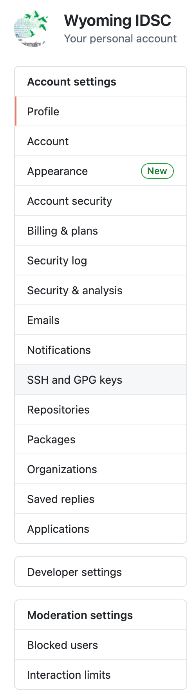
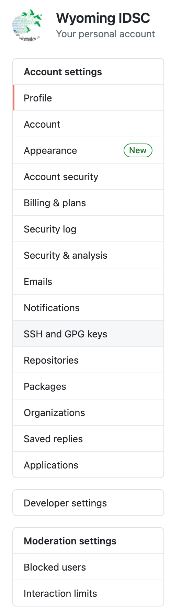
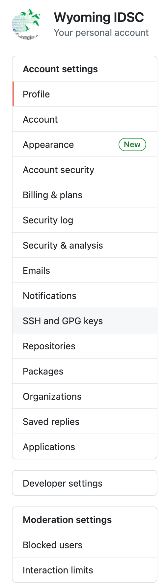

June 1, 2021
The official repository of Summer of Code 2021 is located at https://github.com/wyoibc/soc2021. Now that you have started following its contents, it makes sense to (1) have a copy of it on your computer, and (2) learn how to keep your copy current with what is upstream (i.e. on GitHub). If you were to copy this repository right now, you will have the most current version of it. But once I make any changes to the upstream, your copy will become slightly stale. In this section, we will learn how to make it current again.
cd ~/Github
git clone https://github.com/wyoibc/soc2021git pullgit pull as often as you wish. For SOC2021, it is probably sufficient to pull it once a week. If you begin working on a project that is being updated more frequently, then you will benefit from pulling more often.When you used your login credentials to push contents of your local repository to a new and empty remote GitHub repository, you may have received an email-notice from GitHub that this method of authentication is deprecated. That’s computer science lingo for “about to be phased out”. What that means is that sometime soon, using username and password to push contents to github will no longer work (don’t confuse this with logging onto Github.com, which will still use those credentials.
Instead, you will be using a much more secure form of login called SSH, short for Secure SHell. A SSH password is called a key, which is much longer than a typical, secure password. But perhaps even more importantly, it is encrypted.
A SSH key comes as a pair of a public password, and a private password. You provide your public part to others who you wish to securely communicate with (i.e. Github in this instance). The private key should never be shared with anyone for any purpose. It will sit securely on your computer inside a hidden folder.
In this section, we will generate a SSH key pair and then associate the public key with your Github.com account.
ssh-keygen. It comes preinstalled with the OS. Windows users should be able to access this program inside git bash.ssh-keygen -t rsa -b 4096 -C "name@host.edu"Here, -t rsa flag tells the program to use RSA encryption algorithm when generating the private key. RSA stands for first initials of the three authors who developed this algorithm (Rivest, Shamir & Adleman) in 1977.
-b flag denotes amount of bits to use (size of the key)
-C flag allows a comment, which in this case is your email address associated with github. It will become part of your key.
Once you hit enter, your system will present the following dialogue:
Generating public/private rsa key pair.
Enter file in which to save the key (/Users/wyoibc/.ssh/id_rsa): Notice that the keys will be stored inside your home directory in a hidden folder named .ssh.
By default the keys are named: id_rsa (private) and id_rsa.pub (public). But you don’t have to keep this name. If you wish to change is, type it out. An example could be: /Users/wyoibc/.ssh/t_rex. If you want to keep the default, just hit enter.
Next, the system will ask if you want to protect these keys with a passphrase. If you choose to enter a passphrase, you will need to memorize it and the system will ask you to enter it everytime you wish to use the key. I personally always use a passphrase.
Enter passphrase (empty for no passphrase):
Your identification has been saved in /Users/wyoibc/.ssh/t_rex.
Your public key has been saved in /Users/wyoibc/.ssh/t_rex.pub.
The key fingerprint is:
SHA256:4ps5bMhN7293Grtr0v+dCsUI4Ji02WQL9v+Wut7uOu4 name@host.edu
The key's randomart image is:
+---[RSA 4096]----+
| + + |
| o % o |
| = = . |
| . . o |
| . S. . o |
| ... . o |
| . =.. *. |
| o =+..* =o. o|
| .+o=EBB=Booo|
+----[SHA256]-----+cd /Users/wyoibc/.ssh/
pbcopy < t_rex.pub The key has now been copied to your clipboard.
Next, go to GitHub.com and login to your account. Choose settings, and then SSH keys as follows:

New SSH key and use ctrl+V to paste your public key into the available box and choose a title. Leave no spaces in the title. A title is just an identifier for your key. Finally, choose Add SSH key to complete the process.
ssh-agent is enabled on your system, and add your newly created ssh key to the agent. If you set up a passphrase earlier, you will need to enter it now.ssh-agent -s
ssh-add /Users/wyoibc/.ssh/t_rexssh-add -l
4096 SHA256:uMFoUIUC7osmgDQaNowsOnqEt3XmPPZe4RnR2+Q1KB0 name@host.edu (RSA)cd /Users/wyoibc/.ssh
vim configHost *
AddKeysToAgent yes
UseKeychain yes
Host wyoibc.github.com
HostName github.com
User git
PreferredAuthentications publickey
IdentityFile ~/.ssh/t_rex:wqNow let’s go back and make some changes to the git repository we created last time: testgit.
Let’s create a new plot to include number of deaths from COVID-19 over the same time period as before.
cd /Users/wyoibc/Dropbox/Github/testgitdf <- read.csv("us.csv", header=T)
plot(1:489, df$deaths, pch=16, col="salmon", cex=0.5, xlab="Days", ylab="Num. Deaths")png("covid_combined.png", width=10, height=7, unit="in", res=600)
par(mfrow=c(1,2), mar=c(5,4,4,2), oma=c(2,2,2,2))
plot(1:489, df$cases, pch=16, col="darkgreen", cex=0.5, xlab="Days", ylab="Num. Cases")
plot(1:489, df$deaths, pch=16, col="salmon", cex=0.5, xlab="Days", ylab="Num. Deaths")
title(main="COVID-19 Cases and Deaths 2020-21", outer=TRUE, cex.main=0.9)
dev.off()---
title: COVID-19 Cases & Deaths
author: Vikram Chhatre
date: June 1, 2021
---
1. The following plot shows number of COVID-19 cases and deaths in the United States from January 2020 through May 2021.
<center>
<img src="covid_combined.png" width=700>
</center>git add .
git commit -m "Added a new plot"cd /Users/wyoibc/Dropbox/Github/testgit/.git
vim configurl = git@github.com:wyoibc/testgit.gitgit push